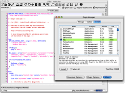

<!-- begin main.text -->

<!-- Thanks to Ollie Rutherfurd and Kris Kopicki for ideas! -->

<!-- for jEdit: :mode=html:tabSize=2:indentSize=2:noTabs=true: -->

<table>
<tr>
<td valign="top">
<script src="http://widgets.twimg.com/j/2/widget.js"></script>
<script>
new TWTR.Widget({
  version: 2,
  type: 'search',
  search: 'jEdit',
  interval: 6000,
  title: '',
  subject: 'Tweets about jEdit',
  width: 250,
  height: 500,
  theme: {
    shell: {
      background: '#8ec1da',
      color: '#ffffff'
    },
    tweets: {
      background: '#ffffff',
      color: '#444444',
      links: '#1985b5'
    }
  },
  features: {
    scrollbar: true,
    loop: false,
    live: true,
    hashtags: true,
    timestamp: true,
    avatars: true,
    toptweets: true,
    behavior: 'all'
  }
}).render().start();
</script>
</td>
<td valign="top"><p> jEdit is a mature programmer's text editor with hundreds (counting the time developing plugins) of person-years of development behind it.  To <a href="index.php?page=download">download</a>, install, and set up jEdit as quickly and painlessly as possible,
go to the <a href="index.php?page=quickstart">Quick Start</a> page.</p>

<p>While jEdit beats many expensive development tools for features and ease of use, it is released as free software with full source code, provided under the terms of the <a href="http://www.gnu.org/licenses/old-licenses/gpl-2.0.html">GPL 2.0</a>. </p>


<p>The jEdit core, together with a large collection of <a href="http://plugins.jedit.org">plugins</a> is maintained by a <a href="http://www.jedit.org/?page=devel">world-wide developer team</a>.</p>

<p>Some of jEdit's features include:</p>
<ul>
<li>Written in Java, so it runs on Mac OS X, OS/2, Unix, VMS and Windows.</li>
<li>Built-in macro language; extensible plugin architecture. Dozens of macros
and plugins available.</li>
<li>Plugins can be downloaded and
installed from within jEdit using the "plugin manager" feature.</li>
<li>Auto indent, and syntax highlighting for more than 130 languages.</li>
<li>Supports a large number of character encodings including UTF8 and Unicode.</li>
<li>Folding for selectively hiding regions of text.</li>
<li>Word wrap.</li>
<li>Highly configurable and customizable.</li>
<li>Every other feature, both basic and advanced, you would expect to find in
a text editor. See the <a href="index.php?page=features">Features</a> page
for a full list.</li>
</ul>

<a href="http://creativecommons.org/licenses/GPL/2.0/">

</a></td>
</tr>
</table>


<?php /*<h2>News</h2>

<?php
  include("/home/project-web/jedit-community/htdocs/get_articles.php");
?>*/?>

<!-- end main.text -->
